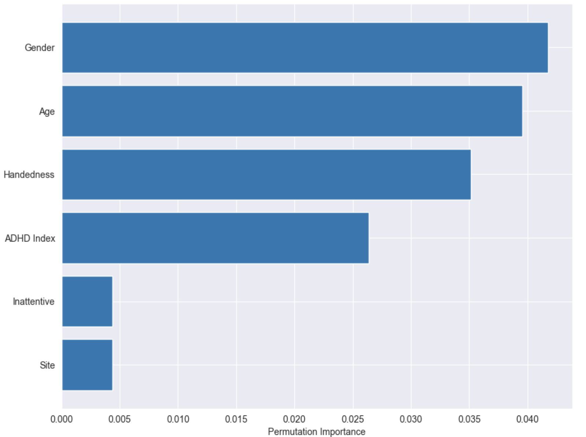
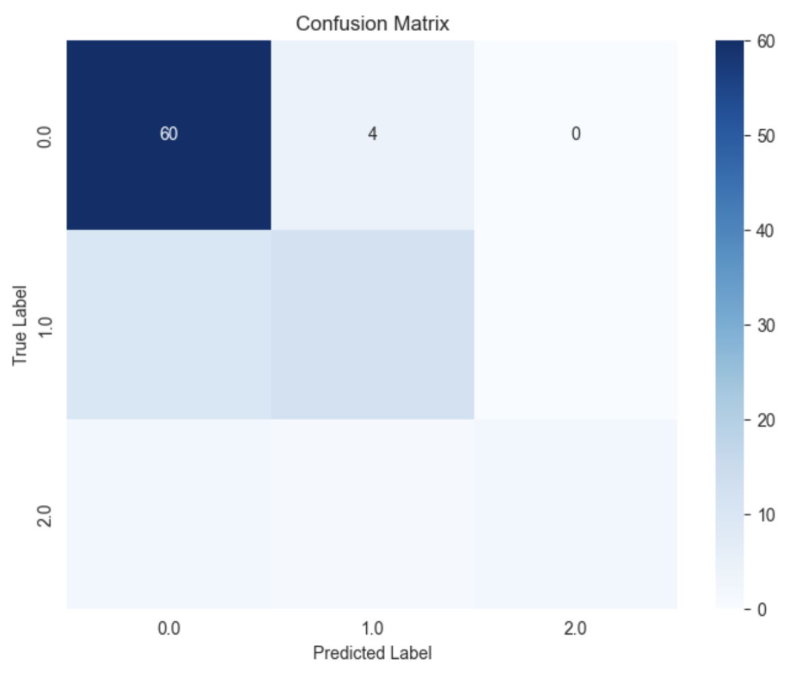
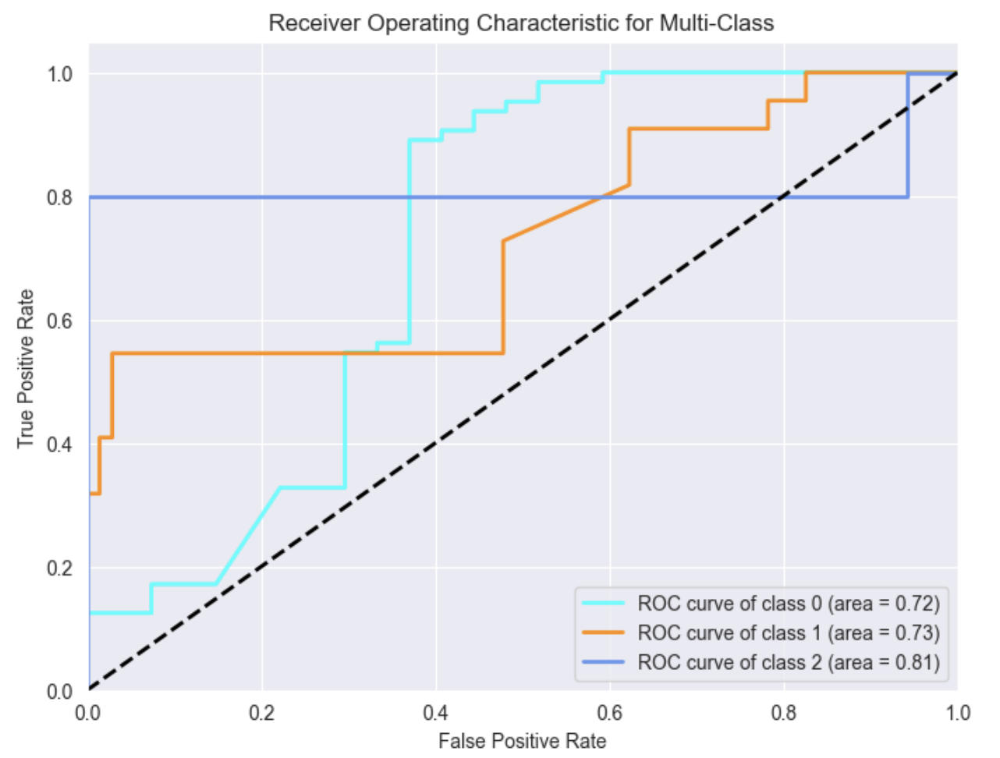
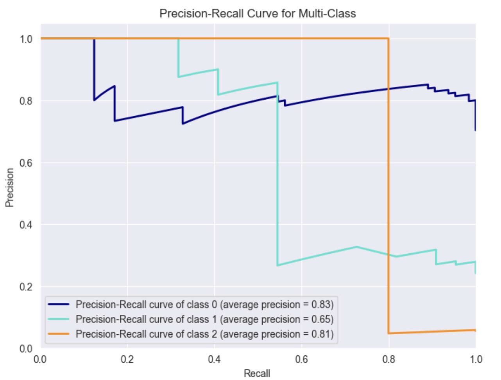
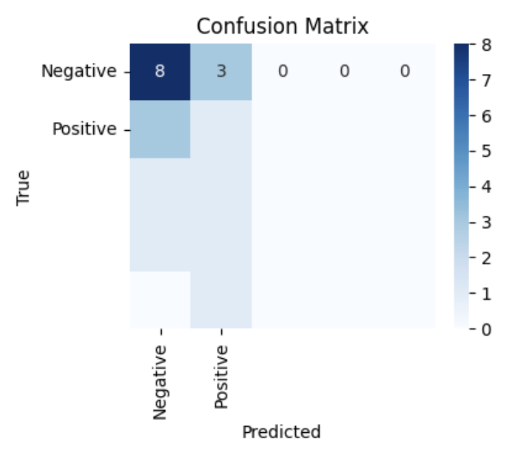
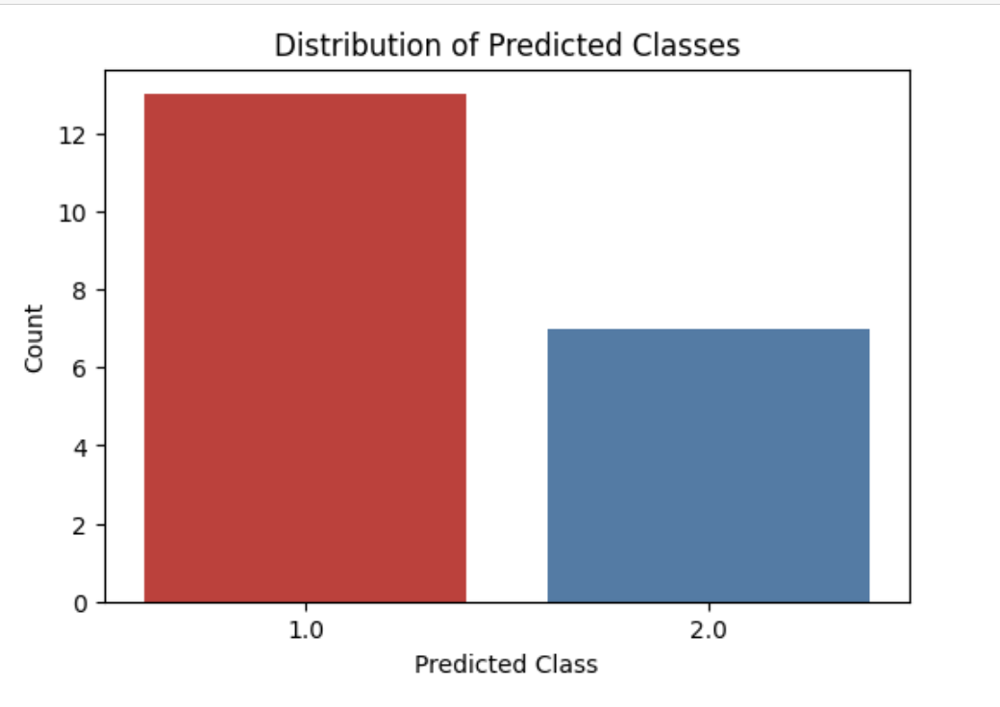

Feature Selection and Naive Bayes
SelectKBest Method for Feature Selection
selects the top k features based on a specified statistical test, where k is a user-defined parameter. The algorithm ranks features based on the chosen test and retains only the highest scoring features. The nature of the statistical test depends on the type of data (e.g., categorical or continuous) and the specific problem being addressed.
Considered k as 6 as it gave the highest accuracy score when trained on a Naive Bayes Classifier
Sample code of SelectKBest
X_train, X_test, y_train, y_test = train_test_split(X, y, test_size=0.3, random_state=42)
selector = SelectKBest(mutual_info_classif, k=6)
X_train_selected = selector.fit_transform(X_train, y_train)
X_test_selected = selector.transform(X_test)
The selected features are ['Site', 'ADHD Index', 'Inattentive', 'Hyper/Impulsive', 'IQ Measure', 'Full4 IQ']
The below permutation importance graph shows valuable insights into how each feature contributes to the model's predictive power.
Uses of SelectkBest
- Dimensionality Reduction: Helps in reducing the number of input variables to those that are believed to be most useful to the model to predict the target variable.
- Improving Model Performance: By eliminating irrelevant or redundant features, it can improve the model's accuracy and efficiency.
- Reducing Overfitting: Fewer features can lead to a simpler model, which reduces the risk of overfitting.
- Enhancing Model Interpretability: Models with fewer features are generally easier to interpret and understand.
- Speeding Up Training: Less computational resources are required, resulting in faster model training.
Considering these selected features, we will train a Naive Bayes classifier
Overview of Naive Bayes classification
Naive Bayes classification is a simple and widely used machine learning algorithm for solving classification problems. It is based on Bayes' theorem and is considered "naive" because it makes a strong independence assumption that features used to predict the class label are conditionally independent given the class. While this independence assumption may not always hold in real-world data, Naive Bayes can still perform surprisingly well in practice, especially for text classification and spam detection.
Bayes Theorem: Naive Bayes is based on Bayes theorem, which is a fundamental probability theory. Bayestheorem relates the probability of an event occurring, given certain evidence, to the probability of that evidence occurring, given the event. In the context of classification, its used to find the probability of a particular class given the observed features
The main types of Naive Bayes classifiers include
- Multinomial Naive Bayes:
- Multinomial Naive Bayes is suitable for discrete data, especially text data, where the features represent the frequency of words or other categorical attributes.
- It models the likelihood of observing specific feature values as multinomially distributed.
- It is widely used in natural language processing tasks, such as text classification, spam detection, and topic modeling.
- Examples of applications: Text classification, email filtering, and content categorization based on word counts or frequencies.
- Gaussian Naive Bayes:
- Gaussian Naive Bayes is used when the features are continuous and follow a Gaussian (normal) distribution.
- It assumes that the likelihood of the features for each class is Gaussian, with the class-specific mean and variance.
- It is commonly applied in scenarios where the data represents continuous or real-valued attributes.
- Examples of applications: Document classification with numerical features (e.g., word counts), sentiment analysis, and medical diagnosis with continuous biomarkers.
- Bernoulli Naive Bayes:
- Bernoulli Naive Bayes is specifically designed for binary or binary-like data, where features are either present (1) or absent (0).
- It models the likelihood of features as a sequence of Bernoulli trials.
- It is often used for problems where you want to classify data based on the presence or absence of certain attributes.
- Examples of applications: Document or image classification based on binary features (e.g., presence or absence of specific keywords or visual elements), sentiment analysis with binary sentiment labels.
Probabilistic nature of Naive Bayes and its Bayes theorem foundation.
Naive bayes follows bayes theorem concept
Bayes theorem formula
P(A|B) = [P(B|A) * P(A)] / P(B)
- P(A|B) is the probability of event A occurring given that event B has occurred
- P(B|A) is the probability of event B occurring given that event A has occurred.
- P(A) is the prior probability of event A.
- P(B) is the prior probability of event B.
Naive Bayes on Record Data
Gaussian Naive Bayes classifier (GaussianNB) is instantiated and trained on the transformed training data (X_train_selected).
clf = GaussianNB()
clf.fit(X_train_selected, y_train)
predictions = clf.predict(X_test_selected)
accuracy = accuracy_score(y_test, predictions)
print(f'Accuracy: {accuracy}')
Results
- Accuracy: 0.8131868131868132
- Precision: 0.8464052287581699
- Recall/Sensitivity: 0.6276515151515151
- Micro F1 Score: 0.8131868131868132
- Macro F1 Score: 0.6897220426632192
- Weighted F1 Score: 0.8007273915483353
- Confusion Matrix:
[[60 4 0]
[10 12 0]
[ 2 1 2]]
Confusion matrix
ROC- curve
Precision Recall
Naive Bayes Classifier with text data
Used text data to and trained MultinomialNB model from the sklearn pytho library to perform binary classification. The two labels are whether the participant has ADHD or not
Results
- Accuracy: 0.45
- Precision: 0.37
- Recall: 0.45
- f1-score: 0.40
- Support: 20  
Code Links
-
Link to text code
Link to feature selection and Naive Bayes for record data code
Link to Naive Bayes for text data code
Link to data after feature selection
Conclusion
Definition
Feature selection is a crucial process in machine learning and data science that involves selecting a subset of relevant features (variables, predictors) for use in model construction. The goal is to improve the model's performance by eliminating irrelevant, redundant, or noisy data.